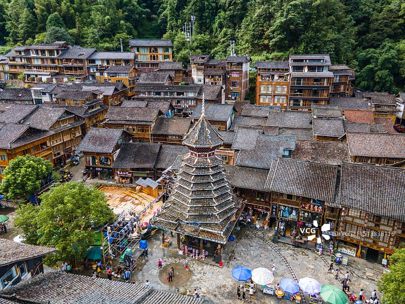
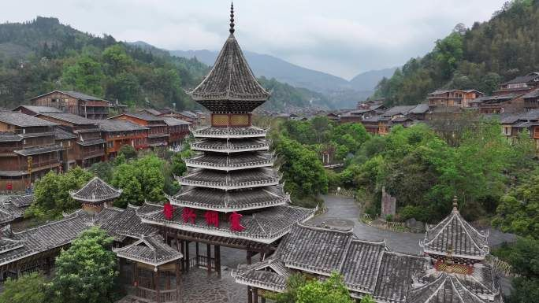

① 一分钟看懂 Zhaoxing
中国贵州 · 黔东南州黎平县
🎫 门票约 80 元
🎶 晚间演出值得看
🌾 堂安梯田徒步
🛡 半山步道湿滑
一句话：被《中国国家地理》誉为"摄影天堂"的侗族聚居大寨，以五座形态各异的鼓楼、风雨桥与侗族大歌闻名，是体验原汁原味侗族生活与梯田风光的最佳去处。
🚗怎么去 & 住哪
- 高铁/机场：到 从江站（贵广高铁）最方便，出站打车/包车到肇兴约 20–30 分钟；也可飞 贵阳转。
- 进寨：景区大门外购票后乘观光车进寨或步行（约 1–2 公里），寨内主街步行即达。
- 住宿：寨内民宿/侗家客栈选择多，临河或靠鼓楼安静又出片；想躲人群可住半山高处的loft客栈。
- 周边联动：与堂安侗寨、厦格梯田就近串联，一条线走完更值。
🥾玩法路线（含堂安徒步）
- 寨内慢逛：主街贯穿五大鼓楼（仁/义/礼/智/信团）与多个花桥（风雨桥），沿河一岸走到另一岸，边看边拍半天足够。
- 堂安梯田徒步：从肇兴沿梯田间步道徒步上堂安侗寨（约 2–3 小时），看层层叠叠的梯田与山间村落，是招牌体验。
- 侗族大歌演出：当晚可看实景歌舞晚会（多在寨内广场/演出场），感受自然复调人声的震撼。
- 高空/全景位：上后山观景台俯瞰全寨鼓楼与吊脚楼群，日出日落时段最出片。

🏔️核心看点
- 五大鼓楼群：仁、义、礼、智、信团五座鼓楼，形制各异的密檐塔式建筑，是村寨的灵魂地标。
- 花桥（风雨桥）：廊桥横跨溪流，兼具交通、遮雨与休憩，是侗寨"三宝"之一。
- 侗族大歌：无伴奏多声部合唱的世界非遗，在鼓楼前/演出场聆听原汁原味的歌声。
- 吊脚楼聚落与梯田：依山傍水的干栏式民居与堂安梯田，构成侗家山水画卷。
- 夜景：入夜鼓楼亮灯倒映水中，是摄影爱好者最爱的画面。
📅最佳时间 · 演出
| 季节 | 看点 | 说明 |
|---|---|---|
| 4–6 月・9–10 月 | 天气舒适、梯田叠翠或金黄 | 最推荐摄影/徒步 |
| 7–8 月 | 林绿稻绿、侗寨过节多 | 雨季湿热多阵雨 |
| 11–2 月 | 云雾山景、年味民俗 | 人少安静，冬季偏冷 |
| 晚间演出 | 侗族大歌/芦笙/歌舞 | 时间以现场公告为准 |
演出场次在旺季增加、淡季可能停演，出行前向客栈或景区确认当日安排。
💰费用预算（参考）
🎫 门票
约 80 元（以官方为准）
🚌 观光车
往返约 20–30 元
🎶 大歌演出
约 80–150 元/人视场次
🏨 寨内住宿
标间约 150–400 元/晚
🍜 餐饮
人均约 40–70 元
💡 合计
一日游门票+交通约 130–260 元
🍜美食 & 贴士
- 酸汤鱼、牛瘪/羊瘪：侗家特色菜，前者普适，瘪类重口慎点。
- 油茶、腌鱼、糯米饭：街头小吃与鼓楼旁餐馆常见，配"高山流水"米酒更有氛围。
- 徒步带装：堂安梯田步道半山多石阶，雨后湿滑，穿防滑鞋、备饮用水。
- 尊重民俗：进鼓楼/民宿先问询，鼓楼是议事与社交空间，不宜喧哗占用。
- 早晚温差大：山谷入夜降温明显，夏季也备件薄外套。